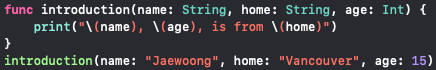
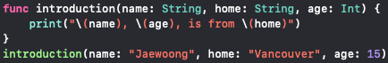
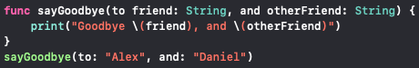
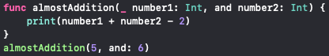
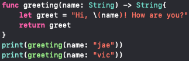

Defining a Function
- The "func" keyword tells the Swift compiler that you are declaring function
- Must add a "( )" to name of function, might include list of parameters within
- Call them by rewriting the name of function with "( )"
Parameters
- To specify function with parameter, insert name of value, ":", and type of value

Argument Labels
- The label each argument within function has same name internally as externally
- The argument labels used to replace the actual value inside the parameter
- Combined with print function, can print out statements by using argument labels
1 Argument Label
- This situation is when you use the name of the internal and external names of the parameters

2 Argument Labels
- Used to make the function read more cleanly
- Instead of writing the names of the parameters, you can replace them with the words "to," or "and" before them and substitue them instead

Omit
- If function is clearer without argument label, able to omit it
- To omit, use _ in place of external name

Default Parameter Values
- Can provide a default value for any parameter
- Need to place default values at end of list and must have argument labels
Return Value
- Is used when you want a specific value of a result
- This function returns the new value
- If a function has this, write (->) following type of data fuction returns (i.e. Int, String, Person,
etc.)
